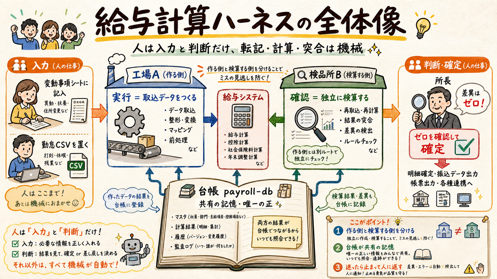
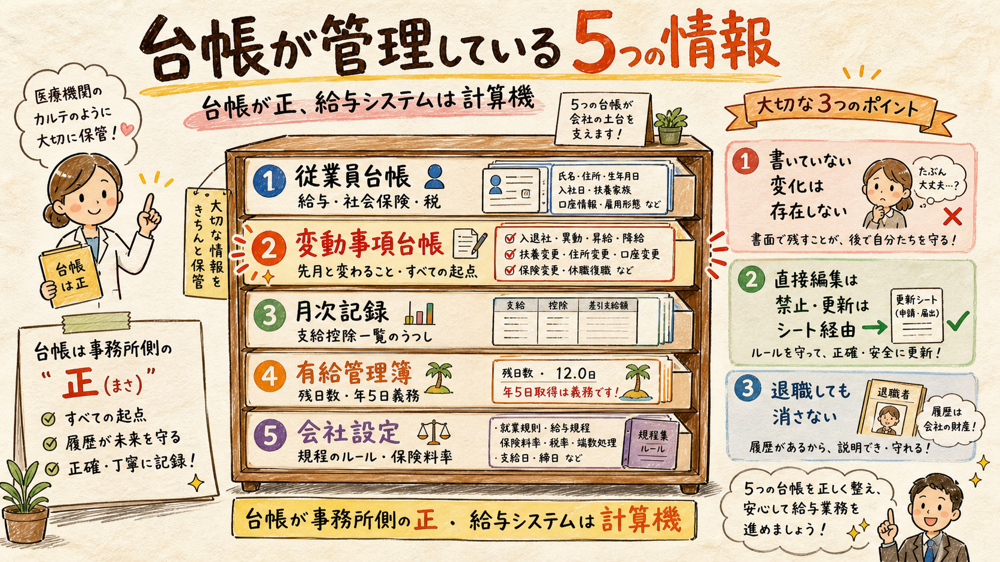
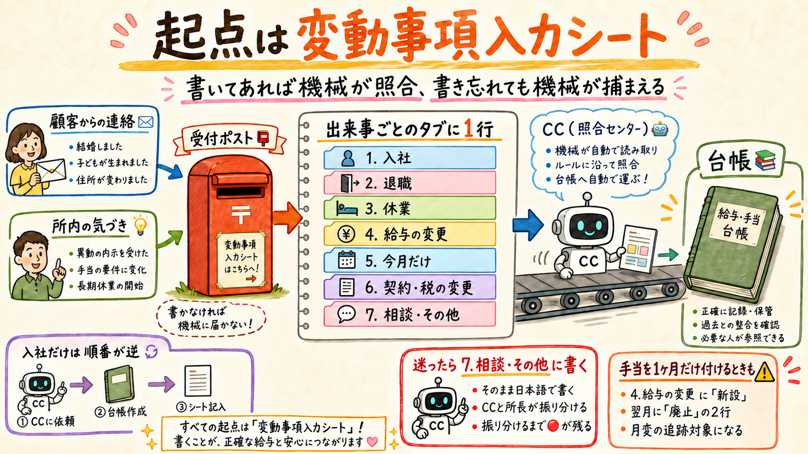
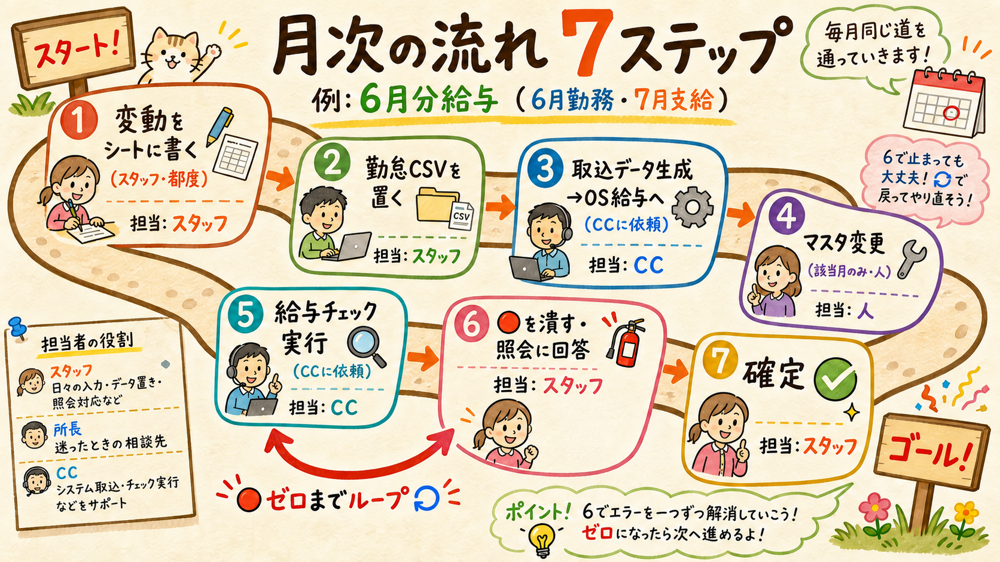
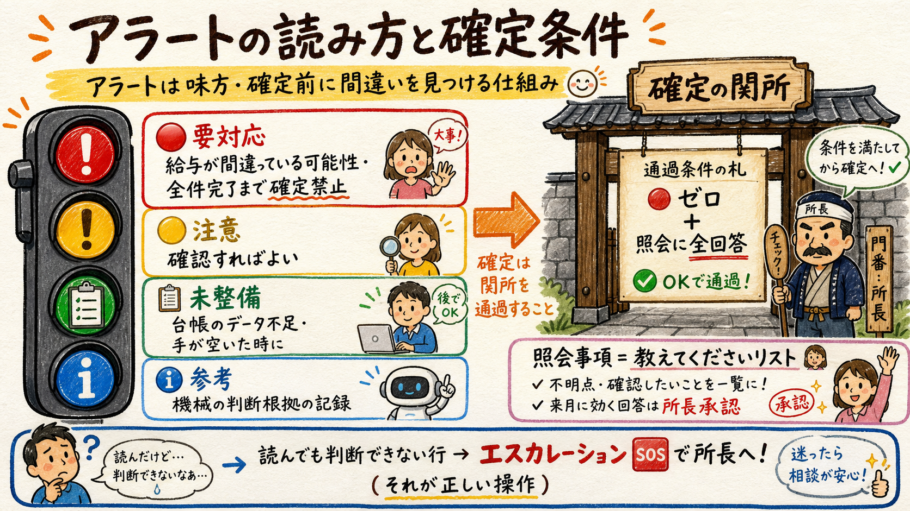

このページは、当事務所の給与計算を支える検証の仕組み（給与計算ハーネス）の全体像と、スタッフの皆さんに毎月お願いする操作をまとめた運用ガイドです。プログラムの中身を知らなくても運用できるように作られています。
仕組みは「実行（作る）」と「確認（検算する）」の2枚構成。あいだに給与システム（OS給与）があり、共有の記憶として台帳（payroll-db）があります。

実行ハーネス（A）が勤怠と変動事項から給与システムへの取込データを作り、確認ハーネス（B）が計算結果（支給控除一覧表）を台帳と独立に突き合わせます。作る側と検算する側を分けているのは、同じ場所で作って確かめると間違いに気づけないからです。
| 覚えるもの | 場所 | 役割 |
|---|---|---|
| 変動事項入力シート.xlsx | payroll-db 直下 | 顧客・所内からの「変化」を書き溜める表（v2: 出来事ごとのタブ「入社／退職／休業／給与の変更／今月だけ／契約・税の変更／相談・その他」に1行。月ごとに作り直さない）。すべての起点 |
| Claude Code（CC） | ターミナル | 「6月分の取込データを作って」「給与チェックして」と頼むだけ。中の仕組みは知らなくてよい |
| アラート一覧.xlsx | 給与資料/2026/YYYYMM/ | CCが出す「確認してほしいことリスト」。🔴を潰すのがスタッフの仕事 |
スタッフが台帳ファイル（YAML）を直接触ることはありません。台帳の更新はすべてシート→CC経由で行われ、直接編集は検証の前提を壊すため禁止です。
台帳は事務所側の「正」。給与システムはあくまで計算機で、毎月この2つを独立に突き合わせるのが仕組みの核です。

| 台帳 | 入っている情報 | 誰がいつ更新するか |
|---|---|---|
| 従業員台帳（employees/） | 基本情報・給与の内訳・社会保険（標準報酬・取得/喪失日・決定履歴）・税区分・住民税 | 入社時にスタッフが雇用契約書（労働条件通知書）をCCに渡して作成（所長の事前確認は不要。不備は機械チェックが止める）。変化はシート経由で反映。退職しても消さない（手続きの根拠のため永続保管） |
| 変動事項台帳（events） | 昇給・入退社・休職・手当変更など「先月と変わること」を予定額つきで構造化した記録 | 変動事項入力シートからCCが取込。ここに書かれた予定と実際の給与を機械が金額まで照合する |
| 月次記録（monthly/） | 支給控除一覧表のミラー（支給・控除・勤怠・差引支給額・振込合計） | 計算後にCCが転記。前月との差分比較や社保・住民税の検算の材料になる |
| 有給管理簿 | 付与履歴・取得累計・残日数・時効・年5日義務の進捗 | 月次確定時に更新。残日数の整合や時効消滅を機械が検算 |
| 会社設定（config/） | 賃金規程のパラメータ（所定労働時間・手当の扱い・丸め方）と法令値（料率・最低賃金・標準報酬表） | スタッフがCCに依頼して更新（料率改定・規程変更の反映・「要確認」の確定）。値の解釈に迷うときは所長へ相談。料率や最低賃金の改定月は機械がカレンダーで監視 |
「書いていない変化は存在しない」が原則。口頭連絡や記憶で処理された変化は台帳に残らず、翌月以降のチェックが働きません。だから「とにかくシートに書く」がすべての起点になります。
日々の入力はこれだけです。難しい判定は機械が止め、判断に迷うものだけ所長へ回します。

| タイミング | やること | ポイント |
|---|---|---|
| 都度（連絡が来たら） | 変動事項入力シートの該当タブに1行追加 | 「はじめに」タブの決定表で出来事→タブを選ぶ。従業員（▼）・種別・日付または金額・根拠（いつ・誰から・何で）・記入者。来月以降に影響するタブは「内容を確認した人・確認日」も（これが承認記録） |
| 締め後（月初） | 勤怠CSVを所定フォルダに置く | 勤怠ツールからエクスポートしてそのまま。加工不要 |
| 締め後 | CCに「◯月分の取込データを作って」 | 不備があれば「◯行目: 形式が違う」と返るので直して再依頼。できたファイルを人がOS給与へ一括取込 |
| 計算後 | 支給控除一覧表を置き、CCに「◯月分の給与チェックして」 | 一覧表の差引支給額と振込合計も転記対象（振込段の転記ミスまで機械が検出できるようになる） |
| チェック後 | アラート一覧の🔴を潰す・照会事項に回答を記入 | 直したらOS給与で再計算→再チェック。🔴ゼロまで繰り返す |
どのタブか分からない出来事は「7.相談・その他」に日本語でそのまま書いてください。CC と所長が振り分けます（振り分けて消込むまで🔴が残る＝無視されません）。無理に近い種別へ当てはめると機械が誤った照合をします。直したいときは行を書き換えず、新しい行＋「訂正対象ID」で書きます。
「固定給に触る変化」（手当の新設・廃止・額変更・通勤手当・時給単価）は「4.給与の変更」または「6.契約・税の変更」へ。1ヶ月だけの手当でも「4.給与の変更」に新設＋翌月廃止の2行で書きます（社会保険の随時改定の追跡対象になるため）。握りつぶしは厳禁です。
入社だけは順番が逆です。①先にスタッフがCCに雇用契約書を渡して従業員台帳を作成（所長の事前確認は不要。契約内容に迷う点があるときだけ相談） → ②台帳ができたらシートに「入社」を記入（台帳にない人はドロップダウンに出ない＝仕組みで順番が守られます）。
例: 6月分給与（6月勤務・7月支給）の1ヶ月。

| # | タイミング | 担当 | やること |
|---|---|---|---|
| 1 | 月の途中（都度） | スタッフ | 変動事項をシートに書き溜める |
| 2 | 締め後（月初） | スタッフ | 勤怠CSVを所定フォルダへ置く |
| 3 | 締め後 | スタッフ→CC→人 | 取込データ生成を依頼し、できたファイルをOS給与へ一括取込（時間形式は60進数） |
| 4 | 該当月のみ | 人（スタッフ） | 昇給・入退社などのマスタ変更をOS給与の画面で実施（CCが対象一覧を出す） |
| 5 | 計算後 | スタッフ→CC | 支給控除一覧表を置いてチェックを依頼。アラート一覧が出力される |
| 6 | チェック後 | スタッフ | 🔴を全件潰す・照会事項に回答（来月以降に効く変動は、内容を確認した担当者が承認欄に名前と日付を記録。判断に迷うものだけ所長へ）。直したら再計算→再チェック |
| 7 | 最後 | 担当スタッフ | 🔴ゼロ＋照会全回答を確認して確定・納品。台帳の月次記録・有給管理簿・消込が更新される。納品用の給与計算報告書はCCが生成するが、🔴が1件でも残ると作られない |
アラート一覧には2つのシートがあります。シート1が機械の検出、シート2が「教えてください」リストです。

| 記号 | 意味 | スタッフの動き |
|---|---|---|
| 🔴 要対応 | 給与が間違っている可能性。内容欄に「何を・なぜ・どうすれば」が書いてある | 全件「完了」になるまで絶対に確定しない。読んでも判断できなければ「エスカレーション」にして所長へ |
| 🟡 注意 | 確認すればよいもの（例: データ不足で一部の判定が保留） | 内容を確認し、必要なら補完。迷えば所長相談 |
| 📋 未整備 | 台帳側のデータ不足（チェックがまだ効かせられない項目） | 手が空いたときに整備（従業員台帳の補充もスタッフ裁量） |
| ℹ️ 参考 | 機械が「問題なし」と判断した根拠の記録 | 読む必要が出たときだけ見ればOK |
シート2「照会事項」は、先月と違う点のうちシートに事前登録がなかったもの。顧客・所内に確認して回答と根拠を記入し、確認が取れたら変動事項シートにも登録します（来月から自動照合に変わります）。昇給・入退社・休職・育休など来月以降にも影響する変動は、内容を確認した担当者の記録（名前＋日付）が承認欄に入るまで🔴「承認待ち」が残ります（承認者は担当スタッフでよい。誰がいつ確認したかを残すのが目的。判断に迷うものだけ所長へ）。
確定の条件 = 🔴ゼロ ＋ 照会全回答。照会への回答は当月の検証の代わりにはなりません。あくまで「来月から正しく守るための取り込み」です。
スタッフが暗記する必要はありません。「これだけのことが毎月自動で検査されている」という安心のための一覧です。
| チェック | 守っていること |
|---|---|
| 変動事項の照合 | シートに書かれた予定（昇給後の金額など）が、実際の給与に金額どおり反映されたか。消込漏れも検出 |
| 前月差分 | 先月と違う点がすべてシートの登録で説明できるか。説明できない差異＝ミスの候補として🔴に |
| 残業単価・残業手当 | 賃金規程どおりの単価か。月60時間を超えた残業の5割増しまで検算 |
| 随時改定（月変） | 昇給・手当変更など固定給の変化を3ヶ月監視し、社会保険の等級変更（月額変更届）の漏れを検出 |
| 定時決定（算定） | 毎年9月の標準報酬の一斉切り替えが、決定通知どおり台帳と控除に反映されたか |
| 社会保険料 | 健保・介護・厚年・雇用保険を1円単位で再計算。入社月・退職月の特別ルール、40/65/70/75歳の年齢到達も監視 |
| 住民税 | 税額通知どおりの月割か。6月の年度切替、退職時の一括徴収ルールまで検算 |
| 所得税の区分 | 扶養控除等申告書の提出状況と甲欄・乙欄の整合 |
| 料率の鮮度 | 健保・介護（3月）・雇用保険（4月）・最低賃金（10月）の改定を更新し忘れていないか |
| 最低賃金・36協定 | 実質時給が最低賃金を下回っていないか。残業時間が法律の上限（月45時間・単月100時間など）を超えていないか |
| 差引・振込合計 | 支給−控除＝差引支給額、全員の差引合計＝振込データ合計。計算が正しくても起きる「振込段の転記ミス」を検出 |
これらの検査項目は法令の条文と照合した正本（給与確定前チェック項目台帳）で管理されており、新しい落とし穴が見つかるたびに追加されていきます。
禁止事項は4つだけ。どれも「機械が守れなくなる」行為です。権限の覚え方は1行:「会社ごとの事実と設定」はスタッフ、「エンジン（仕組みそのもの）」は所長。
① 🔴が残ったまま確定しない（🔴は「給与が間違っているかもしれない」のサイン）
② 台帳ファイルを直接編集しない（更新は必ずシート→CC経由。会社設定（company.yaml・config）はCCに頼んで更新してよく、値に迷うときは所長へ相談。エンジン（scripts）だけはスタッフのCCから仕組み上編集できない）。シートの「取込済ID」列も触らない
③ シートに書かずに口頭・記憶で処理しない（書かれない変化は検証されない）
④ アラートの意味が分からないまま「完了」にしない（分からなければエスカレーション。それが正しい操作）
この仕組みがこうなっている理由は3つです。①給与のミスは「転記」と「突合」で起きるので、そこから人を外す。②チェックは「先月との差分」で見る — 差分がすべてシートで説明できれば給与は正しい。③新しい例外に出会ったら、その場しのぎにせず仕組みに取り込む — だから困ったこと・違和感は必ず報告してください。翌月からは機械が代わりに見張ってくれるようになります。